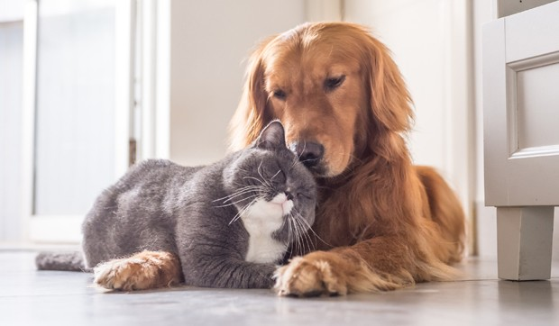
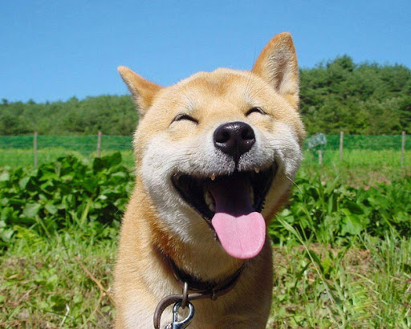

Muitos animais encontram-se abandonados e passando diversas dificuldades, incluindo fome, sede e frio.
Além de abusos que sofrem de pessoas nas ruas.

Um novo lar...
Nós podemos mudar essa situação de abandono com a adoção.
Com um novo lugar pra morar, os pets ficam seguros e alimentados,
cheios de amor pra dar ao seu dono.

Felicidade transborda...
Depois que eles acham um novo lar, é facil ver a felicidade estampada na carinha deles.
Agora tudo que precisam fazer é se preocupar em brincar e curtir sua nova vida.